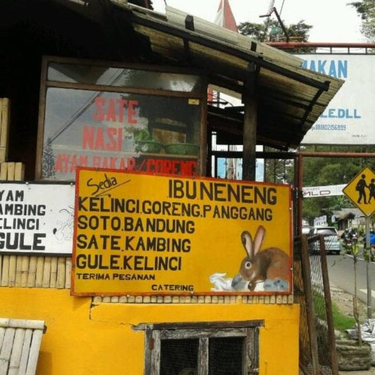

Menggabungkan tradisi lokal dengan sentuhan mahakarya. Setiap hidangan di Warteg Ibu Neneng diracik dengan dedikasi tanpa kompromi, menghadirkan harmoni rempah nusantara yang tak lekang oleh waktu. Pengalaman gastronomi yang dirancang untuk mereka yang menghargai keaslian rasa.